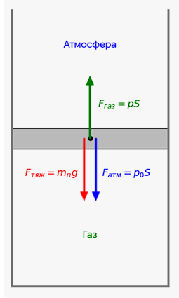
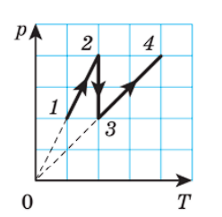
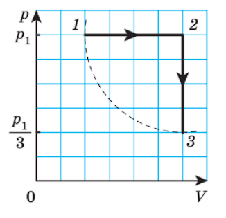
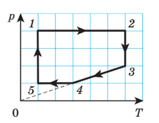
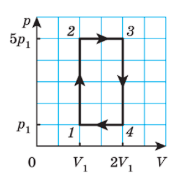
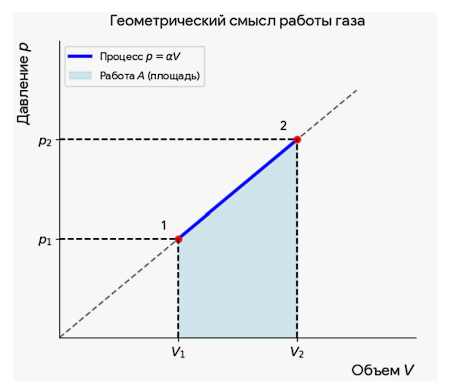
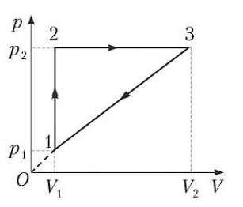
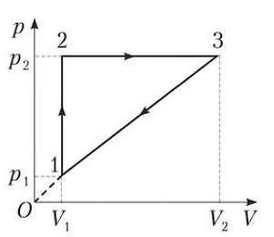

ДЗ 23
Внутренняя энергия. Работа в термодинамике
Выберите вариант ответа или введите полученное числовое значение.
Задача 1
В сосуде находится неон $\left(M = 20\text{ }\frac{\text{г}}{\text{моль}}\right)$ массой $m = 14\text{ г}$. Если температура неона $t = 23\text{ }^\circ\text{C}$, то его внутренняя энергия $U$ равна:
Решение:
Внутренняя энергия идеального одноатомного газа:
$$U = \frac{3}{2}\frac{m}{M}RT = 2,6\text{ кДж}.$$
Задача 2
Если в сосуде объемом $V = 20\text{ л}$ находится идеальный одноатомный газ под давлением $p = 70\text{ кПа}$, то его внутренняя энергия $U$ равна:
Решение:
Внутренняя энергия идеального одноатомного газа:
$$U = \frac{3}{2}pV = 2,1\text{ кДж}.$$
Задача 3
При изобарном расширении идеального газа до объема $V = 14,0\text{ л}$ сила давления совершила работу $A = 510\text{ Дж}$. Если давление газа $p = 85\text{ кПа}$, то начальный объем $V_0$ газа равен:
Решение:
Начальный объем газа:
$$V_0 = V - \frac{A}{p} = 8,0\text{ л}.$$
Задача 4
Работа, совершенная силой давления водорода $\left(M = 2,0\text{ }\frac{\text{г}}{\text{моль}}\right)$ при изобарном расширении, $A = 48\text{ кДж}$. Если начальная температура газа $T_1 = 250\text{ К}$, а объем газа увеличился в $n = 1,6$ раза, то масса $m$ водорода равна:
Решение:
Из изобарного процесса $\frac{V_1}{T_1} = \frac{V_2}{T_2}$ найдем конечную температуру газа: $T_2 = nT_1$. Работа, совершенная силой давления газа,
$$A = \frac{m}{M}R(T_2 - T_1).$$
Из записанных уравнений найдем массу газа:
$$m = \frac{AM}{(n-1)T_1 R} = 77\text{ г}.$$
Задача 5
Идеальный одноатомный газ массой $m = 0,5\text{ кг}$ находится в сосуде под давлением $p = 8 \cdot 10^4\text{ Па}$. Определите внутреннюю энергию газа, если его плотность $\rho = 0,3\text{ }\frac{\text{кг}}{\text{м}^3}$.
Решение:
Тип газа: идеальный одноатомный
Масса газа: $m = 0,5\text{ кг}$
Давление: $p = 8 \cdot 10^4\text{ Па}$
Плотность: $\rho = 0,3\text{ кг/м}^3$
Внутренняя энергия $U$ идеального одноатомного газа определяется по формуле:
Связь между массой $m$, плотностью $\rho$ и объемом $V$:
Масса газа: $m = 0,5\text{ кг}$
Давление: $p = 8 \cdot 10^4\text{ Па}$
Плотность: $\rho = 0,3\text{ кг/м}^3$
Внутренняя энергия $U$ идеального одноатомного газа определяется по формуле:
$$U = \frac{3}{2}\nu RT = \frac{3}{2}pV$$
где $p$ — давление, $V$ — объем газа.Связь между массой $m$, плотностью $\rho$ и объемом $V$:
$$V = \frac{m}{\rho}$$
Объединим формулы, подставив выражение для объема в формулу внутренней энергии:
$$U = \frac{3}{2} \cdot p \cdot \frac{m}{\rho}$$
Подставим числовые значения из условия:
$$U = \frac{3}{2} \cdot 8 \cdot 10^4 \cdot \frac{0,5}{0,3}$$
$$U = 1,5 \cdot 80000 \cdot \frac{5}{3} = 200000\text{ Дж} = 200\text{ кДж}$$
Задача 6
Определите внутреннюю энергию смеси, состоящей из гелия массой $m_1 = 20\text{ г}$ и неона массой $m_2 = 30\text{ г}$, имеющей температуру $T = 300\text{ К}$.
Решение:
Масса гелия (He): $m_1 = 20\text{ г} = 20 \cdot 10^{-3}\text{ кг}$
Молярная масса гелия: $M_1 = 4 \cdot 10^{-3}\text{ кг/моль}$
Масса неона (Ne): $m_2 = 30\text{ г} = 30 \cdot 10^{-3}\text{ кг}$
Молярная масса неона: $M_2 = 20 \cdot 10^{-3}\text{ кг/моль}$
Температура смеси: $T = 300\text{ К}$
Универсальная газовая постоянная: $R = 8,31\text{ Дж/(моль}\cdot\text{К)}$
Оба газа (гелий и неон) являются инертными одноатомными газами.
Внутренняя энергия смеси газов $U$ равна сумме внутренних энергий каждого газа в отдельности:
• Гелий: $\nu_1 = \frac{20\text{ г}}{4\text{ г/моль}} = 5\text{ моль}$
• Неон: $\nu_2 = \frac{30\text{ г}}{20\text{ г/моль}} = 1,5\text{ моль}$
• Общее количество вещества: $\nu = 5 + 1,5 = 6,5\text{ моль}$
Подставим значения в общую формулу:
Молярная масса гелия: $M_1 = 4 \cdot 10^{-3}\text{ кг/моль}$
Масса неона (Ne): $m_2 = 30\text{ г} = 30 \cdot 10^{-3}\text{ кг}$
Молярная масса неона: $M_2 = 20 \cdot 10^{-3}\text{ кг/моль}$
Температура смеси: $T = 300\text{ К}$
Универсальная газовая постоянная: $R = 8,31\text{ Дж/(моль}\cdot\text{К)}$
Оба газа (гелий и неон) являются инертными одноатомными газами.
Внутренняя энергия смеси газов $U$ равна сумме внутренних энергий каждого газа в отдельности:
$$U = U_1 + U_2$$
Формула внутренней энергии для одноатомного газа:
$$U_1 = \frac{3}{2}\nu_1 RT = \frac{3}{2}\frac{m_1}{M_1}RT$$
$$U_2 = \frac{3}{2}\nu_2 RT = \frac{3}{2}\frac{m_2}{M_2}RT$$
Итоговая рабочая формула:
$$U = \frac{3}{2}RT \cdot \left(\frac{m_1}{M_1} + \frac{m_2}{M_2}\right)$$
Найдем количество вещества (число молей) для каждого газа:• Гелий: $\nu_1 = \frac{20\text{ г}}{4\text{ г/моль}} = 5\text{ моль}$
• Неон: $\nu_2 = \frac{30\text{ г}}{20\text{ г/моль}} = 1,5\text{ моль}$
• Общее количество вещества: $\nu = 5 + 1,5 = 6,5\text{ моль}$
Подставим значения в общую формулу:
$$U = \frac{3}{2} \cdot 8,31 \cdot 300 \cdot 6,5$$
$$U = 1,5 \cdot 8,31 \cdot 1950 \approx 24306,75\text{ Дж} \approx 24,31\text{ кДж}$$
Задача 7
При уменьшении объема идеального одноатомного газа в $\alpha = 3,0$ раза давление газа увеличилось на $\beta = 20\text{ }\%$. Во сколько раз изменилась внутренняя энергия газа?
Решение:
Тип газа: идеальный одноатомный
Изменение объема: $V_2 = \frac{V_1}{\alpha}$, где $\alpha = 3,0$ (объем уменьшился в 3 раза)
Изменение давления: $p_2 = p_1 \cdot (1 + \beta)$, где $\beta = 20\% = 0,2$ (давление увеличилось на 20%, то есть $p_2 = 1,2 \cdot p_1$)
Внутренняя энергия $U$ выражается через давление и объем:
Конечное состояние: $U_2 = \frac{3}{2}p_2 V_2$
Найдем отношение конечной энергии к начальной:
• $\frac{p_2}{p_1} = 1,2$
• $\frac{V_2}{V_1} = \frac{1}{3}$
Изменение объема: $V_2 = \frac{V_1}{\alpha}$, где $\alpha = 3,0$ (объем уменьшился в 3 раза)
Изменение давления: $p_2 = p_1 \cdot (1 + \beta)$, где $\beta = 20\% = 0,2$ (давление увеличилось на 20%, то есть $p_2 = 1,2 \cdot p_1$)
Внутренняя энергия $U$ выражается через давление и объем:
$$U = \frac{3}{2}pV$$
Начальное состояние: $U_1 = \frac{3}{2}p_1 V_1$Конечное состояние: $U_2 = \frac{3}{2}p_2 V_2$
Найдем отношение конечной энергии к начальной:
$$\frac{U_2}{U_1} = \frac{\frac{3}{2}p_2 V_2}{\frac{3}{2}p_1 V_1} = \frac{p_2}{p_1} \cdot \frac{V_2}{V_1}$$
Подставим коэффициенты изменений из условия:• $\frac{p_2}{p_1} = 1,2$
• $\frac{V_2}{V_1} = \frac{1}{3}$
$$\frac{U_2}{U_1} = 1,2 \cdot \frac{1}{3} = 0,4$$
Так как получившееся число меньше единицы, энергия уменьшилась. Посчитаем, во сколько именно раз:
$$\frac{U_1}{U_2} = \frac{1}{0,4} = 2,5$$
Задача 8
Идеальный одноатомный газ нагрели от температуры $t_1 = 12\text{ }^\circ\text{C}$ до температуры $t_2 = 69\text{ }^\circ\text{C}$. На сколько процентов возросла его внутренняя энергия?
Решение:
Начальная внутренняя энергия газа:
Находим прирост энергии в процентах:
$$U_1 = \frac{3}{2}\nu RT_1$$
Конечная внутренняя энергия газа:
$$U_2 = \frac{3}{2}\nu RT_2$$
Поделим $U_2$ на $U_1$, чтобы узнать, во сколько раз изменилась энергия. При делении все одинаковые величины ($\frac{3}{2}$, количество вещества $\nu$ и газовая постоянная $R$) полностью сокращаются:
$$\frac{U_2}{U_1} = \frac{\frac{3}{2}\nu RT_2}{\frac{3}{2}\nu RT_1}$$
$$\frac{U_2}{U_1} = \frac{T_2}{T_1}$$
Подставим значения температур в получившееся отношение:
$$\frac{U_2}{U_1} = \frac{342}{285} = 1,2$$
(Это означает, что конечная энергия составляет 1,2 от начальной, то есть $U_2 = 1,2 \cdot U_1$)Находим прирост энергии в процентах:
$$\Delta U(\%) = \left(\frac{U_2}{U_1} - 1\right) \cdot 100\% = (1,2 - 1) \cdot 100\% = 20\%$$
Задача 9
При переходе идеального одноатомного газа из начального состояния в конечное его давление $p$ изменялось по закону: $p = \alpha T^2$, где $\alpha$ — коэффициент пропорциональности, $T$ — абсолютная температура. В результате перехода внутренняя энергия газа уменьшилась на $|\Delta U| = 48\text{ Дж}$, а объем увеличился в $\beta = 5,0$ раза. Определите давление газа в начальном состоянии, если в этом состоянии объем газа $V_1 = 10\text{ л}$.
Решение:
Запишем краткое условие (Дано) сразу в числах СИ:
Закон процесса: $p = \alpha T^2$
Начальный объем: $V_1 = 10\text{ л} = 10^{-2}\text{ м}^3$
Конечный объем (увеличился в 5 раз): $V_2 = 5 \cdot V_1 = 5 \cdot 10^{-2}\text{ м}^3$
Уменьшение внутренней энергии: $\Delta U = -48\text{ Дж}$ (знак минус, так как она уменьшилась)
Так как у нас не дана температура, от нее нужно избавиться, выражаем ее через уравнение Клапейрона — Менделеева.
Из уравнения Менделеева — Клапейрона выразим температуру:
Раз произведение $pV^2$ не меняется, запишем делением формулу для двух состояний:
Закон процесса: $p = \alpha T^2$
Начальный объем: $V_1 = 10\text{ л} = 10^{-2}\text{ м}^3$
Конечный объем (увеличился в 5 раз): $V_2 = 5 \cdot V_1 = 5 \cdot 10^{-2}\text{ м}^3$
Уменьшение внутренней энергии: $\Delta U = -48\text{ Дж}$ (знак минус, так как она уменьшилась)
Так как у нас не дана температура, от нее нужно избавиться, выражаем ее через уравнение Клапейрона — Менделеева.
Из уравнения Менделеева — Клапейрона выразим температуру:
$$T = \frac{pV}{\nu R}$$
Подставим её в закон процесса $p = \alpha T^2$:
$$p = \alpha \cdot \left(\frac{pV}{\nu R}\right)^2 \Longrightarrow p = \alpha \cdot \frac{p^2 V^2}{(\nu R)^2}$$
Сократим обе части на $p$:
$$1 = \frac{\alpha \cdot pV^2}{(\nu R)^2} \Longrightarrow pV^2 = \frac{(\nu R)^2}{\alpha} = \text{const}$$
произведение не меняется, так как количество в-ва, постоянная и коэффициент альфа не изменяются.Раз произведение $pV^2$ не меняется, запишем делением формулу для двух состояний:
$$\frac{p_2 V_2^2}{p_1 V_1^2} = 1 \Longrightarrow p_2 = p_1 \cdot \left(\frac{V_1}{V_2}\right)^2$$
Так как объём увеличился в 5 раз $\left(\frac{V_1}{V_2} = \frac{1}{5}\right)$, получаем связь давлений:
$$p_2 = p_1 \cdot \left(\frac{1}{5}\right)^2 = \frac{p_1}{25}$$
Запишем формулу изменения энергии через деление и разность:
$$\Delta U = U_2 - U_1 = \frac{3}{2}p_2 V_2 - \frac{3}{2}p_1 V_1$$
Подставим вместо $p_2$ выражение $\frac{p_1}{25}$, а вместо $V_2$ значение $5V_1$:
$$\Delta U = \frac{3}{2} \cdot \left(\frac{p_1}{25}\right) \cdot (5V_1) - \frac{3}{2}p_1 V_1$$
$$\Delta U = \frac{3}{2} \cdot \frac{p_1 V_1}{5} - \frac{3}{2}p_1 V_1$$
$$\Delta U = \frac{3}{2}p_1 V_1 \cdot (-0,8) = -1,2 \cdot p_1 V_1$$
$$p_1 = \frac{48}{0,012} = 4000\text{ Па} = 4\text{ кПа}$$
Задача 10
При изобарном нагревании воздуха массой $m = 2,00\text{ кг}$ его силой давления совершена работа $A = 166,2\text{ кДж}$. Определите изменение температуры воздуха. Молярная масса воздуха $M = 29\text{ }\frac{\text{г}}{\text{моль}}$.
Решение:
Формула работы при изобарном процессе:
Для изобарного процесса ($p = \text{const}$) работа газа выражается формулой:
Запишем уравнение состояния идеального газа для начального и конечного состояний:
Для изобарного процесса ($p = \text{const}$) работа газа выражается формулой:
$$A = p \cdot \Delta V$$
Связь с уравнением Менделеева — Клапейрона:Запишем уравнение состояния идеального газа для начального и конечного состояний:
$$p \cdot V_1 = \frac{m}{M}RT_1$$
$$p \cdot V_2 = \frac{m}{M}RT_2$$
Вычитая из второго уравнения первое, получаем:
$$p \cdot \Delta V = \frac{m}{M}R\Delta T$$
Следовательно, работа газа равна:
$$A = \frac{m}{M}R\Delta T$$
$$\Delta T = \frac{A \cdot M}{m \cdot R}$$
$$\Delta T = \frac{166,2 \cdot 10^3 \cdot 29 \cdot 10^{-3}}{2,00 \cdot 8,31} = \frac{166,2 \cdot 29}{16,62}$$
Ответ: 290 К
Задача 11
В изобарном процессе при давлении $p = 120\text{ кПа}$ абсолютная температура идеального газа увеличилась на $\alpha = 65\text{ }\%$. Определите начальный объем газа, если при расширении силой давления газа совершена работа $A = 15,6\text{ Дж}$.
Решение:
1. Связь объема и температуры в изобарном процессе:
Для изобарного процесса ($p = \text{const}$) справедливо уравнение Гей-Люссака:
Для изобарного процесса ($p = \text{const}$) справедливо уравнение Гей-Люссака:
$$\frac{V_1}{T_1} = \frac{V_2}{T_2} \Longrightarrow \frac{V_2}{V_1} = \frac{T_2}{T_1}$$
По условию задачи, абсолютная температура увеличилась на $\alpha = 65\%$, то есть:
$$T_2 = T_1 + 0,65T_1 = 1,65T_1 \Longrightarrow \frac{T_2}{T_1} = 1,65$$
Следовательно, конечный объем выражается через начальный как:
$$V_2 = 1,65V_1$$
Работа силы давления газа определяется формулой:
$$A = p \cdot \Delta V = p \cdot (V_2 - V_1)$$
Подставим выражение для $V_2$:
$$A = p \cdot (1,65V_1 - V_1) = p \cdot 0,65V_1$$
Выразим и рассчитаем начальный объем ($V_1$):
$$V_1 = \frac{A}{0,65 \cdot p}$$
$$V_1 = \frac{15,6}{0,65 \cdot 120 \cdot 10^3} = \frac{15,6}{78 \cdot 10^3} = 0,2 \cdot 10^{-3}\text{ м}^3$$
Так как $1\text{ л} = 10^{-3}\text{ м}^3$, запишем ответ в более удобных единицах:
$$V_1 = 0,2\text{ л}$$
Задача 12
В вертикальном цилиндре под гладким поршнем находился идеальный газ, занимающий объем $V_1 = 0,6\text{ м}^3$. Определите работу, совершенную силой давления газа при его изобарном нагревании, если объем газа увеличился в $n = 1,5$ раза. Атмосферное давление $p_0 = 100\text{ кПа}$, масса поршня $m_{\text{п}} = 10\text{ кг}$. Площадь поперечного сечения цилиндра $S = 10\text{ см}^2$.
Решение:
Поскольку цилиндр вертикальный, поршень гладкий (трения нет) и процесс расширения происходит изобарно, сила давления газа изнутри уравновешивает внешнее атмосферное давление и силу тяжести самого поршня:
При изобарном процессе работа силы давления газа рассчитывается по формуле:
$$p \cdot S = p_0 \cdot S + m_{\text{п}} \cdot g$$
Разделим обе части на площадь сечения $S$, чтобы выразить полное давление газа $p$:
$$p = p_0 + \frac{m_{\text{п}} \cdot g}{S}$$
По условию задачи, объем газа увеличился в $n = 1,5$ раза:
$$V_2 = n \cdot V_1 = 1,5 \cdot V_1$$
Следовательно, изменение объема ($\Delta V$) составляет:
$$\Delta V = V_2 - V_1 = 1,5 \cdot V_1 - V_1 = 0,5 \cdot V_1$$
Формула работы газа:При изобарном процессе работа силы давления газа рассчитывается по формуле:
$$A = p \cdot \Delta V = \left(p_0 + \frac{m_{\text{п}} \cdot g}{S}\right) \cdot 0,5 \cdot V_1$$
Сначала найдем давление газа $p$:
$$p = 10^5 + \frac{10 \cdot 10}{10^{-3}} = 10^5 + \frac{100}{10^{-3}} = 10^5 + 10^5 = 2 \cdot 10^5\text{ Па}$$
$$A = p \cdot 0,5 \cdot V_1 = 2 \cdot 10^5\text{ Па} \cdot 0,5 \cdot 0,6\text{ м}^3 = 60\,000\text{ Дж} = 60\text{ кДж}$$

Задача 13
На рисунке 37 представлен график зависимости давления идеального газа от температуры. На каком процессе силой давления газа совершена наибольшая работа?

Решение:
Процесс 1–2: линия лежит на прямой, проходящей через начало координат (0, 0). В этих координатах это означает изохорный процесс ($V = \text{const}$). Поскольку объём не меняется, работа газа равна нулю ($A_{12} = 0$).
Процесс 3–4: линия точно так же направлена в начало координат (0, 0) — это тоже изохорный процесс ($V = \text{const}$). Работа газа здесь равна нулю ($A_{34} = 0$).
Процесс 2–3: температура остаётся неизменной ($T = \text{const}$), а давление падает. Это изотермическое расширение, при котором объём газа увеличивается и он совершает положительную работу ($A_{23} > 0$).
Процесс 3–4: линия точно так же направлена в начало координат (0, 0) — это тоже изохорный процесс ($V = \text{const}$). Работа газа здесь равна нулю ($A_{34} = 0$).
Процесс 2–3: температура остаётся неизменной ($T = \text{const}$), а давление падает. Это изотермическое расширение, при котором объём газа увеличивается и он совершает положительную работу ($A_{23} > 0$).
Задача 14
Сначала идеальный газ, количество молекул которого $N = 1,2 \cdot 10^{20}$, изобарно нагрели (рис. 40), а затем изохорно охладили до первоначальной температуры $T_3 = T_1 = 600\text{ К}$. Определите работу, совершенную силой давления газа при изобарном процессе.

Решение:
Формула работы газа при постоянном давлении (изобарный процесс 1–2):
• 2 клетки — это начальный объём $V_1$
• 4 клетки — это $2V_1$
• 6 клеток — это $3V_1$
Из графика видно, что точка 1 находится на отметке 2 клетки ($V_1$), а точка 2 — на отметке 6 клеток ($3V_1$).
Найдём изменение объёма ($\Delta V$) на изобарном участке 1–2:
$$A_{12} = p_1 \cdot \Delta V = p_1 \cdot (V_2 - V_1)$$
По оси объёма $V$:• 2 клетки — это начальный объём $V_1$
• 4 клетки — это $2V_1$
• 6 клеток — это $3V_1$
Из графика видно, что точка 1 находится на отметке 2 клетки ($V_1$), а точка 2 — на отметке 6 клеток ($3V_1$).
Найдём изменение объёма ($\Delta V$) на изобарном участке 1–2:
$$\Delta V = V_2 - V_1 = 3V_1 - V_1 = 2V_1$$
Подставляем сюда наше изменение объёма $\Delta V = 2V_1$:
$$A = p_1 \cdot 2V_1 = 2p_1 V_1$$
Так как в условии дано число молекул $N$, мы представляем $\nu$ как $\frac{N}{N_{\text{A}}}$:
$$p_1 V_1 = \frac{N}{N_{\text{A}}}RT$$
Подставляем это выражение в формулу работы:
$$A = 2 \cdot \frac{N}{N_{\text{A}}}RT = \frac{2NRT}{N_{\text{A}}}$$
$$A = \frac{2 \cdot (1,2 \cdot 10^{20}) \cdot 8,31 \cdot 600}{6,02 \cdot 10^{23}}$$
$$A \approx 1987,8 \cdot 10^{-3}\text{ Дж} \approx 2,0\text{ Дж}$$
Задача 15
Состояние идеального газа, масса которого постоянна, изменялось так, как показано на рисунке 42. На каких участках цикла сила давления газа совершала положительную работу, а на каких — отрицательную?

Решение:
$$A_{12} > 0,\; A_{23} > 0,\; A_{45} < 0,\; A_{51} < 0.$$
Задача 16
Определите работу, совершенную силой давления идеального газа при циклическом процессе, график которого представлен на рисунке 46. Количество вещества газа $\nu = 3,0\text{ моль}$. В состоянии 1 температура газа $T_1 = 280\text{ К}$.

Решение:
Геометрический смысл работы в цикле:
Полная работа газа за цикл в координатах $(p, V)$ численно равна площади фигуры внутри замкнутого контура (в данном случае — площади прямоугольника 1–2–3–4).
1. Высота (изменение давления): от $p_1$ до $5p_1$.
Запишем уравнение Менделеева — Клапейрона для состояния 1:
Полная работа газа за цикл в координатах $(p, V)$ численно равна площади фигуры внутри замкнутого контура (в данном случае — площади прямоугольника 1–2–3–4).
$$A_{\text{цикла}} = \Delta p \cdot \Delta V$$
Определяем размеры прямоугольника по графику:1. Высота (изменение давления): от $p_1$ до $5p_1$.
$$\Delta p = 5p_1 - p_1 = 4p_1$$
2. Ширина (изменение объема): от $V_1$ до $2V_1$.
$$\Delta V = 2V_1 - V_1 = V_1$$
Подставим эти значения в формулу площади:
$$A_{\text{цикла}} = 4p_1 \cdot V_1 = 4p_1 V_1$$
В условии нам даны количество вещества $\nu = 3,0\text{ моль}$ и температура в точке 1 ($T_1 = 280\text{ К}$).Запишем уравнение Менделеева — Клапейрона для состояния 1:
$$p_1 V_1 = \nu RT_1$$
Подставим это произведение в формулу работы цикла:
$$A_{\text{цикла}} = 4 \cdot (\nu RT_1)$$
$$A_{\text{цикла}} = 12 \cdot 8,31 \cdot 280 = 99,72 \cdot 280 = 27\,921,6\text{ Дж} \approx 28\text{ кДж}$$
Задача 17
Идеальный газ в количестве $\nu = 4,0\text{ моль}$ расширяется так, что его давление изменяется прямо пропорционально объему. Определите работу, совершенную силой давления газа при увеличении его температуры на $\Delta T = 10\text{ К}$.
Решение:

Давление прямо пропорционально объему: $p = \alpha V$, где $\alpha$ — некоторый коэффициент пропорциональности. В координатах $(p, V)$ этот процесс изображается прямой линией, выходящей из начала координат $(0, 0)$.
Геометрический смысл работы:
Работа газа численно равна площади фигуры под графиком в координатах $(p, V)$. Для данного процесса эта фигура является прямоугольной трапецией с основаниями $p_1$ и $p_2$ и высотой $(V_2 - V_1)$:
$$A = \frac{p_1 + p_2}{2} \cdot (V_2 - V_1) = \frac{1}{2}(p_1 + p_2)(V_2 - V_1)$$
Раскроем скобки в числителе:
$$A = \frac{1}{2}(p_1 V_2 - p_1 V_1 + p_2 V_2 - p_2 V_1)$$
Связь давлений и объемов:Так как $p = \alpha V$, то:
1. $p_1 = \alpha V_1$
2. $p_2 = \alpha V_2$
Подставим перекрестные произведения:
1. $p_1 V_2 = (\alpha V_1)V_2 = \alpha V_1 V_2$
2. $p_2 V_1 = (\alpha V_2)V_1 = \alpha V_1 V_2$
Заметим, что $p_1 V_2 = p_2 V_1$. Подставим это равенство в формулу работы:
$$A = \frac{1}{2}(p_2 V_2 - p_1 V_1)$$
Использование уравнения Менделеева — Клапейрона:Для начального и конечного состояний запишем:
1. $p_1 V_1 = \nu RT_1$
2. $p_2 V_2 = \nu RT_2$
Подставляем эти выражения в формулу работы:
$$A = \frac{1}{2}(\nu RT_2 - \nu RT_1) = \frac{1}{2}\nu R(T_2 - T_1) = \frac{1}{2}\nu R\Delta T$$
$$A = \frac{1}{2} \cdot 4,0 \cdot 8,31 \cdot 10 = 2 \cdot 83,1 = 166,2\text{ Дж}$$
Задача 18
При изобарном процессе температура идеального газа изменяется от $T_1 = 2T_2$ до $T_2$. Если первоначальную температуру газа поднять вдвое, то работа, совершенная над газом:
Решение:
Работа, совершаемая газом при изобарном процессе: $A = p(V_2 - V_1)$. Используя уравнение Клапейрона — Менделеева $pV = \nu RT$, получим $A = \nu R(T_2 - T_1)$. Следовательно,
$$A_1 = \nu R(T_2 - 2T_2) = -\nu RT_2;$$
$$A_2 = \nu R(T_2 - 4T_2) = -3\nu RT_2.$$
Так как согласно условию газ охлаждается, то он совершает отрицательную работу. Положительную работу совершают внешние силы, сжимающие газ: $A' = -A$. Поэтому $A_1' = \nu RT_2$, $A_2' = 3\nu RT_2$, откуда $\frac{A_2'}{A_1'} = 3$. Работа, совершенная над газом, увеличится в 3 раза.
Задача 19
В двух одинаковых цилиндрах под легкими поршнями находятся водород $\left(M_1 = 2,0\text{ }\frac{\text{г}}{\text{моль}}\right)$ и азот $\left(M_2 = 2,8\text{ }\frac{\text{г}}{\text{моль}}\right)$. Оба газа изобарно расширяются. Если массы газов и их начальные и конечные температуры одинаковы, то отношение $\frac{A_1}{A_2}$ работы, совершенной водородом, к работе, совершенной азотом, равно:
Решение:
При изобарном процессе работу идеального газа можно рассчитать по формуле
$$A = p\Delta V.$$
Используя уравнение Клапейрона — Менделеева, получим для работы формулу
$$A = \frac{m}{M}R\Delta T.$$
Определим работы, совершаемые водородом и азотом, учитывая, что начальные и конечные температуры у них одинаковы
$$\Delta T_1 = \Delta T_2 = \Delta T$$
и массы одинаковы
$$m_1 = m_2 = m,$$
$$A_1 = \frac{m}{M_1}R\Delta T,\quad A_2 = \frac{m}{M_2}R\Delta T,$$
откуда
$$\frac{A_1}{A_2} = \frac{M_2}{M_1} = \frac{28\text{ }\frac{\text{г}}{\text{моль}}}{2,0\text{ }\frac{\text{г}}{\text{моль}}} = 14.$$
Задача 20
С идеальным газом, количество вещества которого $\nu$ моль, совершают цикл, где $1 \to 2$ — изохора, $2 \to 3$ — изобара, $3 \to 1$ — прямая, проходящая через начало координат (рис. 2.26). Отношение давлений в состояниях 2 и 1 $\frac{p_2}{p_1} = k$. Температура газа в состоянии 3 равна $T_3$. Работа $A$, совершаемая газом в процессе $1 \to 2 \to 3$, равна:

Решение:
Пусть температуры газов в состояниях 1, 2, 3 равны $T_1$, $T_2$, $T_3$. Точки 1 и 3 находятся на одной прямой, проходящей через начало координат, уравнение которой $p = \alpha V$, где $\alpha$ — коэффициент пропорциональности. Тогда $p_1 = \alpha V_1$ и $p_2 = \alpha V_2$. $\frac{p_2}{p_1} = \frac{V_2}{V_1} = k$. Точки 2 и 3 находятся на изобаре, для которой
$$\frac{V_1}{T_2} = \frac{V_2}{T_3},\text{ откуда } \frac{V_2}{V_1} = \frac{T_3}{T_2} = k\text{ и } T_2 = \frac{T_3}{k}.$$
Работа газа в процессе $1 \to 2 \to 3$ равна площади прямоугольника $V_1 2 3 V_2$. Следовательно, $A = p_2(V_2 - V_1) = p_2 V_2 - p_2 V_1$. Используя уравнение Клапейрона — Менделеева, получим:
$$p_2 V_2 = \nu RT_3;\quad p_2 V_1 = \nu RT_2 = \nu R\frac{T_3}{k}.$$
Искомая работа
$$A = \nu RT_3\left(1 - \frac{1}{k}\right) = \nu RT_3\frac{k - 1}{k}$$
Задача 21
С идеальным газом, количество вещества которого $\nu$ моль, совершают цикл, где $1 \to 2$ — изохора, $2 \to 3$ — изобара, $3 \to 1$ — прямая, проходящая через начало координат (рис. 2.27). Отношение давлений в состояниях 2 и 1 $\frac{p_2}{p_1} = k$. Температура газа в состоянии 3 равна $T_3$. Полезная работа $A_{\text{п}}$, совершенная газом за цикл, равна:

Решение:
Полезная работа численно равна площади, ограниченной циклом:
$$A_{\text{п}} = \frac{1}{2}(p_2 - p_1)(V_2 - V_1).$$
Согласно условию $\frac{p_2}{p_1} = k$, откуда $p_2 = kp_1$. Отношение объемов (см. решение задачи 20) $\frac{V_2}{V_1} = k$ и $T_2 = \frac{T_3}{k}$. Поэтому $V_2 = kV_1$. Тогда
$$A_{\text{п}} = \frac{1}{2}(kp_1 - p_1)(kV_1 - V_1) = \frac{1}{2}p_1 V_1(k - 1)^2.$$
Из уравнения Клапейрона — Менделеева $p_1 V_1 = \nu RT_1$. Точки 1 и 2 находятся на изохоре. Поэтому
$$\frac{p_2}{p_1} = \frac{T_2}{T_1} = k,\text{ откуда } T_1 = \frac{T_2}{k} = \frac{T_3}{k^2}.$$
Искомая работа
$$A_{\text{п}} = \frac{\nu RT_3}{2}\left(\frac{k - 1}{k}\right)^2.$$